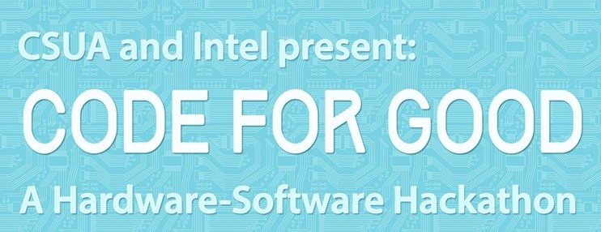
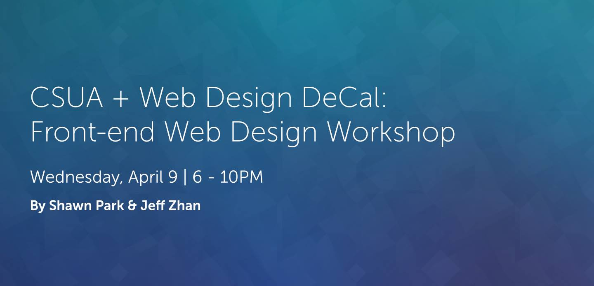
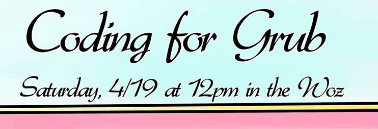
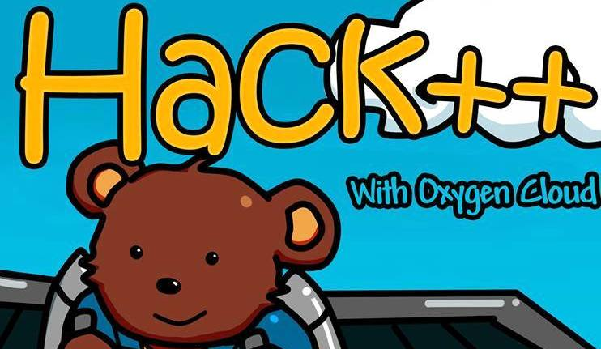
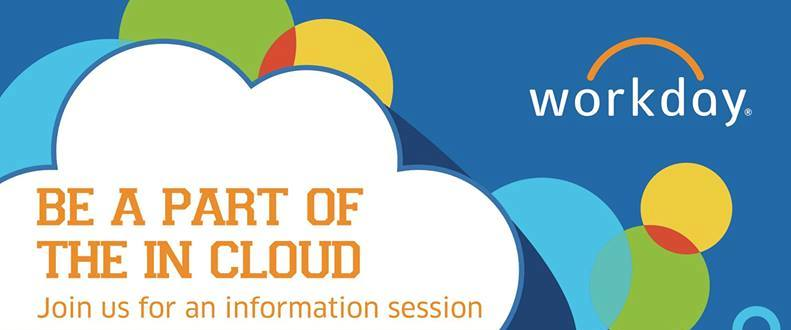
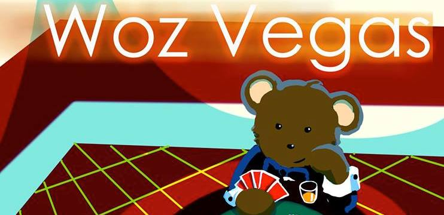

Spring 2014 Events
UNIX/Vim Workshop
Tuesday, January 28, 2014. 6 PM. HP Auditorium.
Learn basic Unix and Vim in a workshop geared towards 61A/B students.
C Refresher Session

Saturday, February 1, 2014. 2-4 PM. HP Auditorium.
Professor David Wagner asked us to do a C Refresher session for
CS161, so we will be holding one as the first project is released!
Topics: pointers & how pointers are stored in memory; structs,
C Arrays, Strings; memory layout (stack frames); brief tutorial on gdb
Open Stack Training
February 10-13, 2014. 7:30-10:30 PM. HP Auditorium.
OpenStack is open source software that can help you roll your own
hosting and VM services like Heroku or AWS. It provides a Hypervisor
(OS Virualization layer) and tools to manage networking, computational
resources, and storage on your VMs across different kinds of
hardware. Come if you are interested in network engineering, the future
of system administration, running your own servers, SAAS, or cloud
computing.
Code for Good: A Hardware-Software Hackathon with Intel

February 15 at 5 PM - February 16 at 5 PM. Woz.
CSUA is partnering with Intel for an exciting 24-hour hardware +
software hackathon revolving around the exciting new Intel Galileo
Development board! Intel will be providing Berkeley students with
10 Galileo boards, complete with dev kits (cables, Arduino Uno R3
sensors, and more). Each team of 4-5 students will be able to work
with their own board.
Front-end Web Design Workshop

April 9, 2014. 6-10 PM. Woz.
CSUA is partnering with Shawn Park and Jeff Zhan of the Web Design Decal
to present a workshop streamlined for EECS/CS majors.
Have you ever wanted to learn front-end web design to build your own
website? Or do you know basic HTML & CSS but want to learn how to use
the jQuery JavaScript library to add cool features to your site?
This workshop is for you! This fast-paced overview of front-end web
development will be covering HTML, CSS, and jQuery. Stay for everything or
drop in for specific sections.
Coding for Grub with Cisco Meraki

April 19, 2014. 12-4 PM. Woz.
A Meraki engineer will pose a real life programming problem, and you will
solve them! Take this chance to get to know Meraki's representatives and
show off your hacking skills.
Hackathon Sponsored by Meraki, Rackspace & EA

May 2 at 7 PM to May 3 at 4 PM. Woz.
Students will have 18 hours to hack on whatever CS project they want. That
includes hardware, phone apps, web services, and much more. We have great
prizes and great food: dinner, midnight sushi, early morning snacks, breakfast,
and lunch. Come for a great time of community hacking and learning!
Hack++ with Oxygen Cloud

Sunday, February 23, 2014. 4 PM. Woz.
It's the return of the Hack++! We do all the normal things we do
at Hack+s (every Sunday at 4pm in the Woz) like study, socialize,
and eat food, except now we have MORE food and Oxygen Cloud is here
to introduce odrive, an easy way to connect users and servers! Be
sure to check it out!
CSUA + Google@Berkeley: Google Code Jam

Friday, April 11, 2014. 5 PM. 405 Soda.
Participate in Google Code Jam with your fellow Bears! Have fun
tackling problems while we provide you with delicious food from Gypsies.
Those who make it past the qualification round can win a tour to Google
Headquarters that includes lunch at one of Google's delicious cafes.
Workday Info Session: Clouds & Sailing

Wednesday, April 23, 2014. 4 PM. Woz.
Workday is holding an tech infosession featuring Seamus Donahue, Principal
Software Development Engineer at Workday.
A cloud atlas is a pictorial key (or atlas) to the nomenclature of clouds and was used in the recent past to understand the vagaries of the weather. A good knowledge of the cloud atlas often made the difference between life and death especially at sea.
A cloud atlas is a pictorial key (or atlas) to the nomenclature of clouds and was used in the recent past to understand the vagaries of the weather. A good knowledge of the cloud atlas often made the difference between life and death especially at sea.
General Meeting 1: Woz Vegas

Friday, February 7, 2014. 5 PM. Woz.
Join us for a night of excitement and irresistible fun at the
Lounge that never sleeps: Wozniak Lounge. The event will consist of
poker, Cards, more Cards (against Humanity), pleasant company, and
a general introduction to the Computer Science Undergraduate
Association over classy dinner and (non-alcoholic) drinks. Remember,
what happens in Woz Vegas, stays in Woz Vegas.
General Meeting 2: Speakers from Prismatic

Wednesday, March 5, 2014. 7 PM. HP Auditorium.
We're having our 2nd General Meeting! Enjoy a nice dinner, socialize,
and listen to our guest speaker Jenny Finkel, the Chief Software
Architect at Prismatic, a ground-breaking new discovery app rapidly
growing into its second year of expansion. Jenny completed her
undergrad degree in Computer Science at Columbia, followed that
with her MS and PhD in Computer Science at Stanford, and finally
completed a post-doctoral fellowship at MIT and Columbia. During
the course of her academic career she published seventeen different
papers on machine learning and natural language processing, and
created the widely-used Stanford Named Entity Recognition software
package.
General Meeting 3: Elections

Wednesday, April 30, 2014. 6 PM. Woz.
1. Vote on a constitutional amendment.
2. Run for leadership positions in Politburo.
3. Vote for candidates for Politburo.
4. Hang out with friends from CSUA, and talk about club missions.
2. Run for leadership positions in Politburo.
3. Vote for candidates for Politburo.
4. Hang out with friends from CSUA, and talk about club missions.